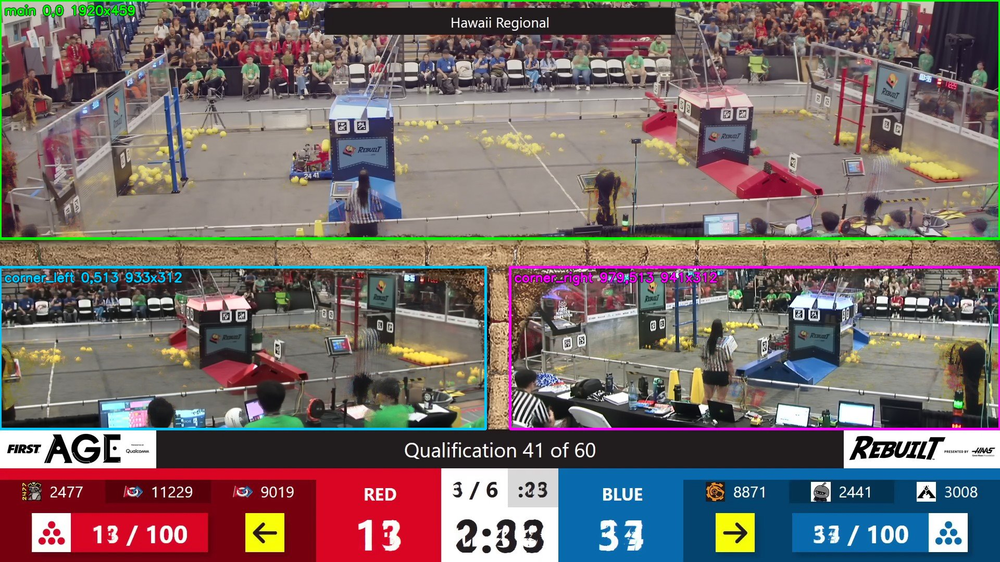
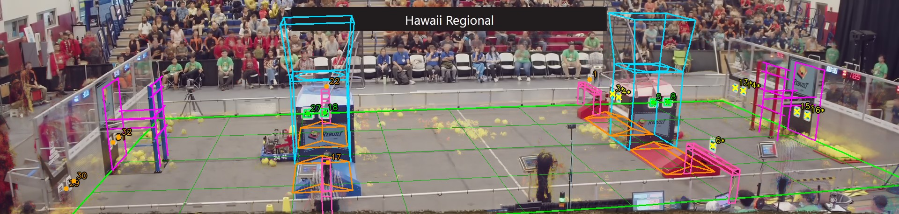
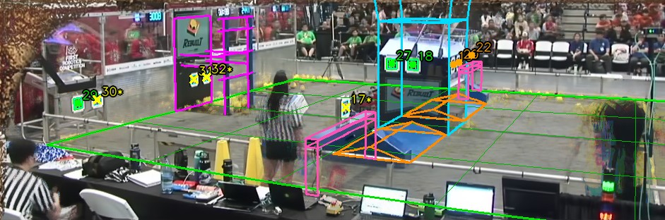
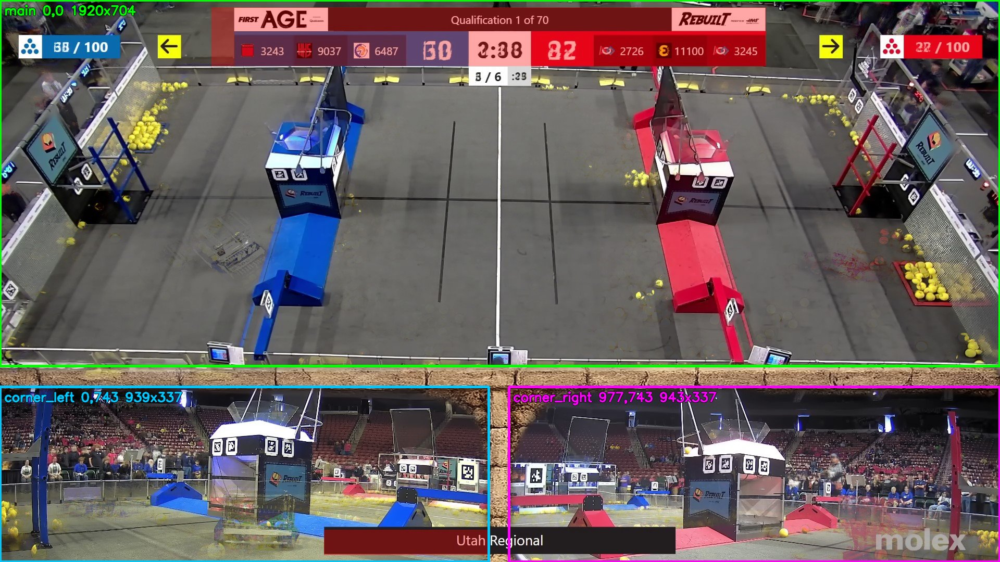
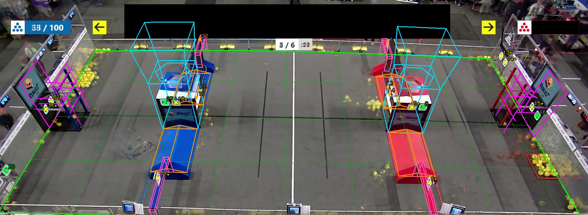
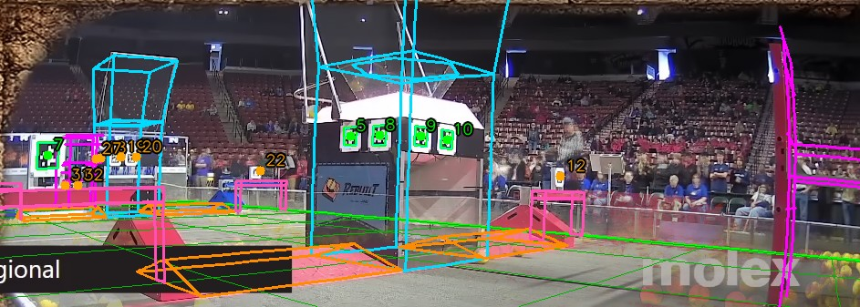

Same game, very different broadcasts
Left: the app finds where each camera sits in the broadcast. Right: the field wireframe after the automatic AprilTag solve.
Hawaii Regional
low, wide main camera; scoreboard and corner cameras stacked mid-screen

Broadcast layout detected: main (green), corner left (cyan), corner right (magenta)

Main camera solve

Corner right solve
Utah Regional
high, steep main camera; corners along the bottom

Broadcast layout detected

Main camera solve

Corner right solve